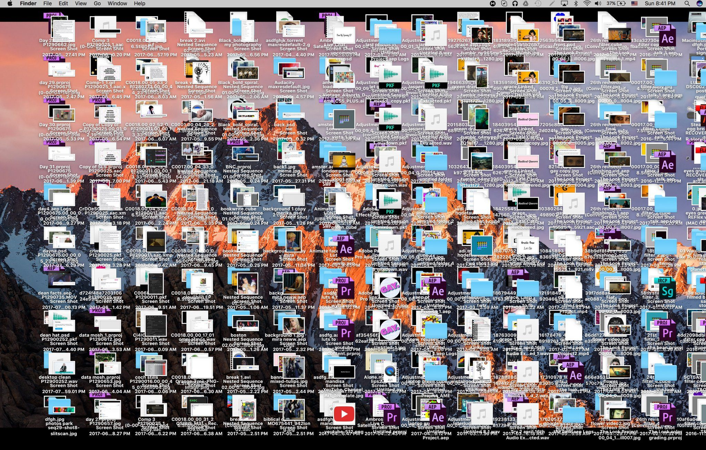

Organization
It will be useful to have a folder for our course where you can keep all the materials and the documents and code you create organized. You should do this also for all your research. This will ensure your work is organized and improve your ability to make good work. It is difficult to do things correctly when your computer looks like this

Create a folder for the course
- Create a folder named EconGrowth in your desktop or home folder (preferred) or some other location where youc an find it easily. Need help? Follow the instructions for your computer. (Windows) (Mac) (Linux)
- Inside the EconGrowth folder create the following subfolders:
- progs (you will use this folder to save scripts and settings files)
- data (you will use this folder to save data you download or create in the course)
- graphs (you will save figures here)
- labs (you will clone the lab assignments here)
- notebooks (you will save the notebooks we create and work with here)
- project (you will save all the files, data, notebooks, documents, figures, etc. of your semester project here)
I recommend not leaving blank spaces in folders or file names. Use a dash '-' or caps as in EconGrowth.
Template folder for projects
It is always useful and wise to keep projects separately and organize all the files related to a project in its own folder. I use this folder structure for my projects where I keep LaTeX files for working papers and slides in the current folder, scripts and notebooks in progs (using subfolders for each programming language I use), papers and other related readings in papers, all original and processed data in data, and output figures and tables in graphs and tables. This obviously is not the only way you could organize your files (see, e.g., here, here, here). Find what works best for you, but thinking about the ability of others to use your code, data, analyses, and results. This folder will be the base for the replication package of any paper you publish, so the better organized it is the better for you and others.